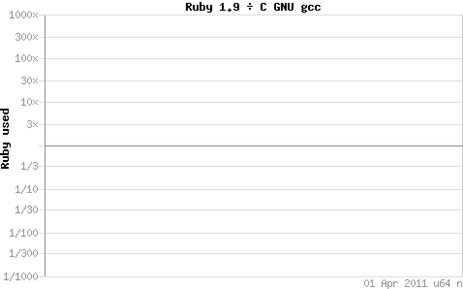
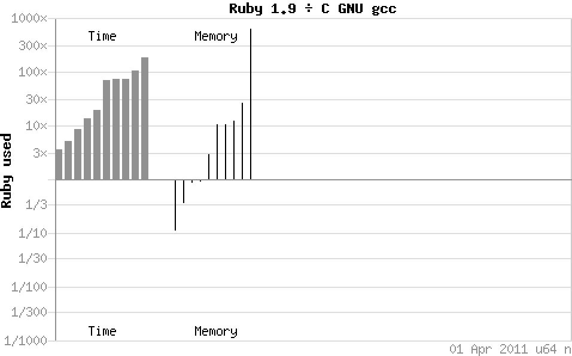
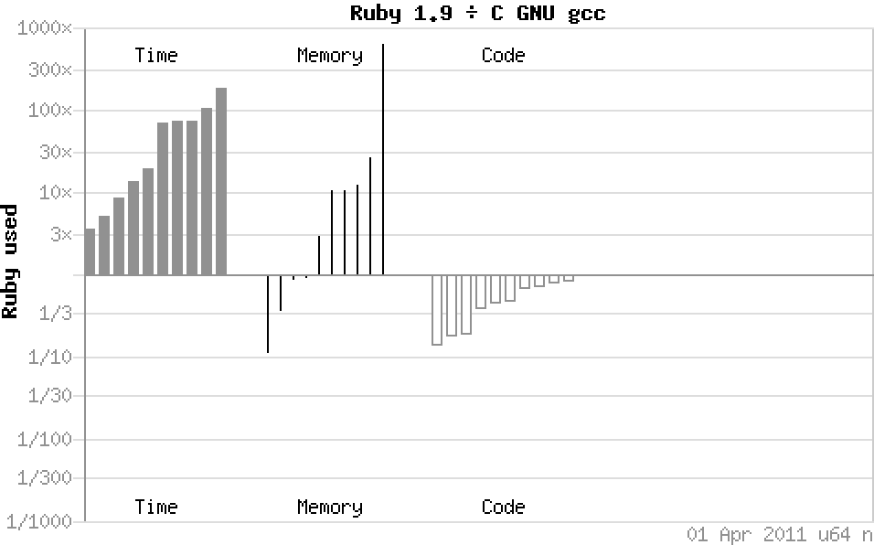
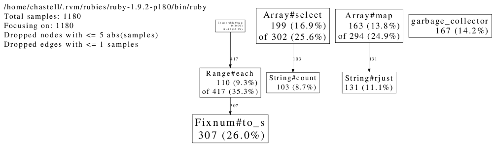
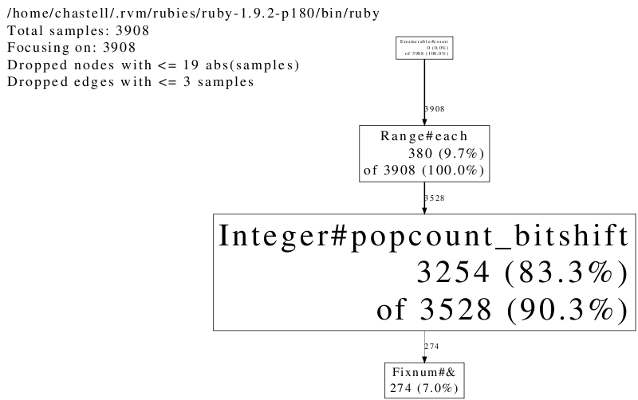
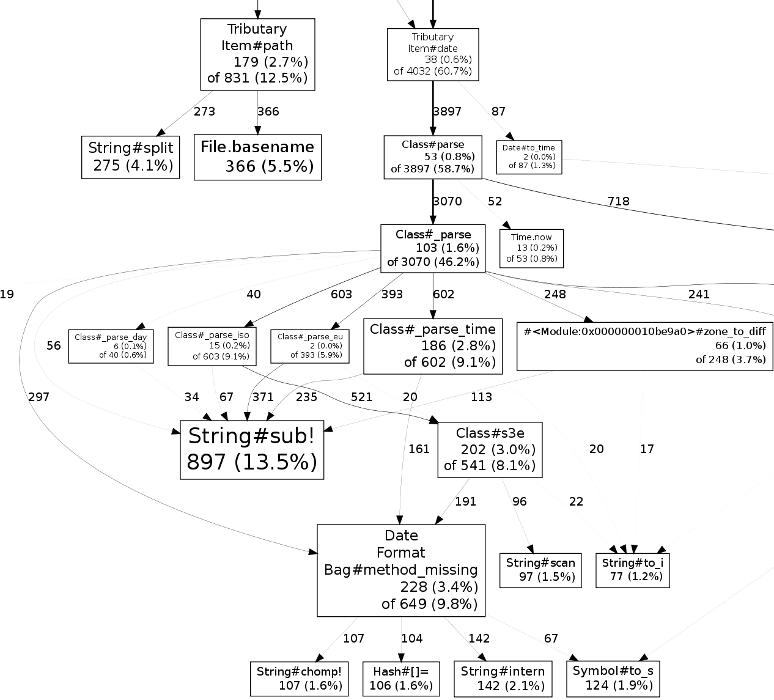

From
From
Profiling Ruby
to
Frankenstein Programming
or how I learned
to stop worrying
and love using Ruby
for scientific computations
me, me, me.
- (that’s Piotr Szotkowski)
- (or @chastell)


Ruby’s
performance
Ruby’s
‘performance’


- shootout
- .
alioth - .
debian - .
org





but… but…
benchmarks?srsly?
Synthetic benchmarks tell us sweet FA
about real world performance of code,architecture
being a much more significant consideration than the proportion of raw MIPS a given language will deliver on a given platform.
The average netbook could happily run
all of Teller’s fusion bomb modelsalong with the full telemetry analysis
of all the Apollo missionsin the pauses between loading XKCD comics
and binning junk mail
without the user being any the wiser.
profiling
Ruby

Project Euler
starting in the top left corner of a 2×2 grid, there are 6 routes (without backtracking)
to the bottom right corner:
how many routes are there
through a 20×20 grid?
only right and down
so, let’s say… zeroes and ones?
0011, 0101, 0110, 1001, 1010, 1100
all (2+2)-digit binary numbers
with the same number of ones and zeroes
grid = 2
grid = 2
(0...2**(2 * grid)) # (0-15)
grid = 2
(0...2**(2 * grid)) # (0-15)
.map { |n| n.to_s 2 } # ['0', '1', '10', '11'…]
grid = 2
(0...2**(2 * grid)) # (0-15)
.map { |n| n.to_s 2 } # ['0', '1', '10', '11'…]
.map { |s| s.rjust 2 * grid, '0' } # ['0000','0001','0010'…]
grid = 2
(0...2**(2 * grid)) # (0-15)
.map { |n| n.to_s 2 } # ['0', '1', '10', '11'…]
.map { |s| s.rjust 2 * grid, '0' } # ['0000','0001','0010'…]
.select { |s| s.count('1') == s.count('0') } # ['0011','0101','0110'…]
grid = 2
(0...2**(2 * grid)) # (0-15)
.map { |n| n.to_s 2 } # ['0', '1', '10', '11'…]
.map { |s| s.rjust 2 * grid, '0' } # ['0000','0001','0010'…]
.select { |s| s.count('1') == s.count('0') } # ['0011','0101','0110'…]
.size # 6# ruby grid.rb <number>
grid = ARGV.first.to_i
puts (0...2**(2 * grid))
.map { |n| n.to_s 2 }
.map { |s| s.rjust 2 * grid, '0' }
.select { |s| s.count('1') == s.count('0') }
.size$ ruby grid.rb 2
6
$ ruby grid.rb 20
^Cgrid.rb:2:in `block in <main>': Interrupt
from grid.rb:2:in `each'
from grid.rb:2:in `map'
from grid.rb:2:in `<main>'
$ time ruby grid.rb 2
6
real 0m0.017s
user 0m0.020s
sys 0m0.000s
$ time ruby grid.rb 8
12870
real 0m0.204s
user 0m0.180s
sys 0m0.020s
$ time ruby grid.rb 10
184756
real 0m3.040s
user 0m2.890s
sys 0m0.130s
$ time ruby grid.rb 11
705432
real 0m13.291s
user 0m12.750s
sys 0m0.490s

require 'profile'
$ time ruby grid.rb 9
48620
real 0m0.827s
user 0m0.780s
sys 0m0.040s
$ time ruby -r profile grid.rb 9
48620
% cumulative self self total
time seconds seconds calls ms/call ms/call name
32.38 12.64 12.64 1 12640.00 18570.00 Array#select
23.64 21.87 9.23 1 9230.00 13610.00 Array#map
12.09 26.59 4.72 1 4720.00 6840.00 Range#each
10.04 30.51 3.92 524288 0.01 0.01 String#count
6.25 32.95 2.44 262144 0.01 0.01 String#rjust
5.43 35.07 2.12 262145 0.01 0.01 Fixnum#to_s
5.15 37.08 2.01 262144 0.01 0.01 Fixnum#==
4.97 39.02 1.94 262145 0.01 0.01 Fixnum#*
0.05 39.04 0.02 2 10.00 10.00 IO#write
0.00 39.04 0.00 2 0.00 0.00 IO#set_encoding
0.00 39.04 0.00 1 0.00 6840.00 Enumerable.map
0.00 39.04 0.00 1 0.00 0.00 Fixnum#**
0.00 39.04 0.00 1 0.00 0.00 String#to_i
0.00 39.04 0.00 1 0.00 0.00 Array#first
0.00 39.04 0.00 1 0.00 0.00 Array#size
0.00 39.04 0.00 28 0.00 0.00 Hash#default
0.00 39.04 0.00 1 0.00 20.00 IO#puts
0.00 39.04 0.00 1 0.00 20.00 Kernel.puts
0.00 39.04 0.00 1 0.00 39040.00 #toplevel
real 0m40.984s
user 0m39.080s
sys 0m1.260s
gem install ruby-prof
$ time ruby-prof grid.rb 9
48620
Thread ID: 14590720
Total: 3.150000
%self total self wait child calls name
22.86 1.30 0.72 0.00 0.58 1 Array#select
18.41 0.58 0.58 0.00 0.00 524288 String#count
17.14 0.89 0.54 0.00 0.35 1 Range#each
15.87 0.96 0.50 0.00 0.46 1 Array#map
14.60 0.46 0.46 0.00 0.00 262144 String#rjust
11.11 0.35 0.35 0.00 0.00 262145 Fixnum#to_s
0.00 0.00 0.00 0.00 0.00 2 IO#write
0.00 0.00 0.00 0.00 0.00 1 IO#puts
0.00 0.00 0.00 0.00 0.00 1 Kernel#puts
0.00 0.89 0.00 0.00 0.89 1 Enumerable#map
0.00 0.00 0.00 0.00 0.00 1 <Class::Range>#allocate
0.00 0.00 0.00 0.00 0.00 1 Fixnum#**
0.00 0.00 0.00 0.00 0.00 1 String#to_i
0.00 0.00 0.00 0.00 0.00 1 Array#first
0.00 0.00 0.00 0.00 0.00 28 Hash#default
0.00 0.00 0.00 0.00 0.00 2 IO#set_encoding
0.00 3.15 0.00 0.00 3.15 1 Kernel#load
0.00 3.15 0.00 0.00 3.15 2 Global#[No method]
real 0m3.425s
user 0m2.560s
sys 0m0.830s
$ ruby-prof -p graph_html -f grid.html grid.rb 9
48620


gem install perftools.rb
$ export CPUPROFILE=grid
$ time ruby -r perftools grid.rb 9
48620
PROFILE: interrupts/evictions/bytes = 76/0/272
real 0m0.928s
user 0m0.830s
sys 0m0.090s
$ pprof.rb --text grid
Using local file /home/chastell/.rvm/rubies/ruby-1.9.2-p180/bin/ruby.
Using local file grid.
Total: 76 samples
16 21.1% 21.1% 16 21.1% garbage_collector
12 15.8% 36.8% 12 15.8% String#count
11 14.5% 51.3% 11 14.5% Fixnum#to_s
10 13.2% 64.5% 22 28.9% Array#select
10 13.2% 77.6% 21 27.6% Range#each
10 13.2% 90.8% 10 13.2% String#rjust
7 9.2% 100.0% 17 22.4% Array#map
0 0.0% 100.0% 21 27.6% Enumerable#map
$ time ruby grid.rb 10
184756
real 0m3.082s
user 0m2.910s
sys 0m0.150s
$ time ruby -r perftools grid.rb 10
184756
PROFILE: interrupts/evictions/bytes = 293/0/272
real 0m3.189s
user 0m2.940s
sys 0m0.230s
$ pprof.rb --text grid
Using local file /home/chastell/.rvm/rubies/ruby-1.9.2-p180/bin/ruby.
Using local file grid.
Total: 293 samples
67 22.9% 22.9% 67 22.9% Fixnum#to_s
56 19.1% 42.0% 78 26.6% Array#select
45 15.4% 57.3% 45 15.4% garbage_collector
44 15.0% 72.4% 72 24.6% Array#map
31 10.6% 82.9% 98 33.4% Range#each
28 9.6% 92.5% 28 9.6% String#rjust
22 7.5% 100.0% 22 7.5% String#count
0 0.0% 100.0% 98 33.4% Enumerable#map
$ pprof.rb --pdf grid > grid.pdf
Using local file /home/chastell/.rvm/rubies/ruby-1.9.2-p180/bin/ruby.
Using local file grid.
Dropping nodes with <= 1 samples; edges with <= 0 abs(samples)
$ ruby -r perftools grid.rb 10

$ ruby -r perftools grid.rb 11

$ ruby -r perftools grid.rb 12

grid = ARGV.first.to_i
puts (0...2**(2 * grid))
.map { |n| n.to_s 2 }
.map { |s| s.rjust 2 * grid, '0' }
.select { |s| s.count('1') == s.count('0') }
.sizegrid = ARGV.first.to_i
puts (0...2**(2 * grid))
.map { |n| n.to_s 2 }
.select { |s| s.count('1') == grid }
.sizegrid = ARGV.first.to_i
puts (0...2**(2 * grid))
.select { |n| n.to_s(2).count('1') == grid }
.sizegrid = ARGV.first.to_i
puts (0...2**(2 * grid))
.count { |n| n.to_s(2).count('1') == grid }
$ time ruby -r perftools grid.rb 12
2704156
PROFILE: interrupts/evictions/bytes = 5640/0/272
real 0m57.870s
user 0m55.000s
sys 0m2.690s

$ time ruby -r perftools grid-short.rb 12
2704156
PROFILE: interrupts/evictions/bytes = 2744/0/200
real 0m27.676s
user 0m27.420s
sys 0m0.130s
Westheimer’s Discovery
a couple of months in the laboratory
can frequently save
a couple of hours in the library

class Integer
def popcount_to_s
to_s(2).count '1'
end
end
grid = ARGV.first.to_i
puts (0...2**(2 * grid)).count { |n| n.popcount_to_s == grid }
$ time ruby grid-classy.rb 12
2704156
real 0m26.562s
user 0m26.370s
sys 0m0.100sclass Integer
def popcount_bitshift
count = 0
number = self
while number > 0
number &= number - 1
count += 1
end
count
end
end
grid = ARGV.first.to_i
puts (0...2**(2 * grid)).count { |n| n.popcount_bitshift == grid }class Integer
def popcount_bitshift
count = 0
number = self
while number > 0
number &= number - 1
count += 1
end
count
end
end
grid = ARGV.first.to_i
puts (0...2**(2 * grid)).count { |n| n.popcount_bitshift == grid }
$ time ruby grid-bitshift.rb 12
2704156
real 0m33.155s
user 0m33.010s
sys 0m0.010s
require 'inline'
class Integer
inline do |builder|
builder.c '
int popcount_bitshift_c() {
long number = NUM2LONG(self);
int count;
for (count = 0; number; count++) number &= number - 1;
return count;
}
'
end
end
grid = ARGV.first.to_i
puts (0...2**(2 * grid)).count { |n| n.popcount_bitshift_c == grid }require 'inline'
class Integer
inline do |builder|
builder.c '
int popcount_bitshift_c() {
long number = NUM2LONG(self);
int count;
for (count = 0; number; count++) number &= number - 1;
return count;
}
'
end
end
grid = ARGV.first.to_i
puts (0...2**(2 * grid)).count { |n| n.popcount_bitshift_c == grid }
$ time ruby grid-bitshift-c.rb 12
2704156
real 0m4.649s
user 0m4.590s
sys 0m0.040srequire 'inline'
class Integer
inline do |builder|
builder.c '
int popcount_builtin() {
return __builtin_popcountl(NUM2LONG(self));
}
'
end
end
grid = ARGV.first.to_i
puts (0...2**(2 * grid)).count { |n| n.popcount_builtin == grid }
$ time ruby grid-builtin.rb 12
2704156
real 0m4.559s
user 0m4.390s
sys 0m0.110s
Westheimer’s Discovery
a couple of months in the laboratory
can frequently save
a couple of hours in the library

we want to make
2 × gridsteps
by combininggridright andgriddown onespick
gridelements from a set of2 × gridelementsnumber of such combinations is known:
it’s the binomial coefficient of2 × gridovergridit’s equal to
(2 × grid)! / (grid! × (2 × grid - grid)!)for
grid = 2it’s4! / (2! × (4 - 2)!)for
grid = 20it’s40! / (20! × (40 - 20)!)(40 × 39 × … × 21) / (20 × 19 × … × 1) = 137,846,528,820
benchmarking
Project Euler
the sum of the primes below 10
is 2 + 3 + 5 + 7 = 17find the sum of all the primes
below two million

class Integer
def prime?
# …
end
end
puts (2...2_000_000).select(&:prime?).inject :+class Integer
def stupid_prime?
prime = true
(2...self).each { |i| prime = false if (self % i).zero? }
prime
end
endclass Integer
def tedious_prime?
(2...self).all? { |i| (self % i).nonzero? }
end
endclass Integer
def simple_prime?
(2..Math.sqrt(self).floor).all? { |i| (self % i).nonzero? }
end
end- cool story, bro, but…
require 'prime'- gives us
- Integer#prime?
- like, already.
class Integer
def simple_prime?
(2..Math.sqrt(self).floor).all? { |i| (self % i).nonzero? }
end
endrequire 'benchmark'
require 'prime'
require './euler-primes'
Benchmark.bmbm do |bench|
bench.report 'stupid:' do
(2..10_000).each { |i| i.stupid_prime? }
end
bench.report 'tedious:' do
(2..10_000).each { |i| i.tedious_prime? }
end
bench.report 'simple:' do
(2..10_000).each { |i| i.simple_prime? }
end
bench.report 'clever:' do
(2..10_000).each { |i| i.clever_prime? }
end
bench.report 'stdlib:' do
(2..10_000).each { |i| i.prime? }
end
end$ ruby benchmark.rb
Rehearsal --------------------------------------------
stupid: 13.080000 0.000000 13.080000 ( 13.107838)
tedious: 2.090000 0.000000 2.090000 ( 2.092263)
simple: 0.070000 0.000000 0.070000 ( 0.069488)
clever: 0.040000 0.000000 0.040000 ( 0.043665)
stdlib: 0.150000 0.000000 0.150000 ( 0.145920)
---------------------------------- total: 15.430000sec
user system total real
stupid: 13.030000 0.000000 13.030000 ( 13.061577)
tedious: 2.080000 0.000000 2.080000 ( 2.089508)
simple: 0.070000 0.000000 0.070000 ( 0.067561)
clever: 0.040000 0.000000 0.040000 ( 0.038180)
stdlib: 0.140000 0.000000 0.140000 ( 0.145690)
require 'benchmark'
require 'prime'
require './euler-primes'
Benchmark.bmbm do |bench|
bench.report 'simple:' do
(2..100_000).each { |i| i.simple_prime? }
end
bench.report 'clever:' do
(2..100_000).each { |i| i.clever_prime? }
end
bench.report 'stdlib:' do
(2..100_000).each { |i| i.prime? }
end
end$ ruby benchmark-stdlib.rb
Rehearsal -------------------------------------------
simple: 1.190000 0.000000 1.190000 ( 1.195284)
clever: 0.660000 0.010000 0.670000 ( 0.664936)
stdlib: 2.210000 0.000000 2.210000 ( 2.220644)
---------------------------------- total: 4.070000sec
user system total real
simple: 1.180000 0.000000 1.180000 ( 1.184010)
clever: 0.660000 0.000000 0.660000 ( 0.661777)
stdlib: 2.210000 0.000000 2.210000 ( 2.221904)
class Integer
def simple_prime?
(2..Math.sqrt(self).floor).all? { |i| (self % i).nonzero? }
end
endclass Integer
def simple_prime?
(2..Math.sqrt(self).floor).all? { |i| (self % i).nonzero? }
end
# 173.simple_prime? goes from 2 to 13
endclass Integer
def simple_prime?
(2..Math.sqrt(self).floor).all? { |i| (self % i).nonzero? }
end
# 173.simple_prime? goes from 2 to 13
# …checking (among others) divisibility by 2, 4, 6, 8, 10, 12…
endclass Integer
def simple_prime?
(2..Math.sqrt(self).floor).all? { |i| (self % i).nonzero? }
end
def clever_prime?
return true if self == 2
return false if self.even?
3.step(Math.sqrt(self).floor, 2).all? { |i| (self % i).nonzero? }
end
endalgorithms are hard
– let’s go caching
- (…and now you have two problems)
profiling web applications
- Rack-based for starters
- (Rails is Rack-based)
- Sinatra app + Rack server
- tributary: a tiny blogging engine (yay!)
- let’s ApacheBench an install with many items
$ export CPUPROFILE=profile
$ rackup -r perftools
[2010-10-21 14:59:39] INFO WEBrick 1.3.1
[2010-10-21 14:59:39] INFO ruby 1.9.2 (2010-08-18) [x86_64-linux]
[2010-10-21 14:59:39] INFO WEBrick::HTTPServer#start: pid=346 port=9292
[…]
$ ab -n 10 http://localhost:9292/
This is ApacheBench, Version 2.3 <$Revision: 655654 $>
[…]
Time taken for tests: 66.078 seconds
[…]
Requests per second: 0.15 [#/sec] (mean)
Time per request: 6607.803 [ms] (mean)
Time per request: 6607.803 [ms] (mean, across all concurrent requests)
Transfer rate: 0.41 [Kbytes/sec] received
Connection Times (ms)
min mean[+/-sd] median max
Connect: 0 0 0.0 0 0
Processing: 6536 6608 105.3 6581 6879
Waiting: 6535 6607 105.3 6581 6878
Total: 6536 6608 105.4 6581 6879
[…]
$ pprof.rb --pdf profile > profile.pdf
Dropping nodes with <= 33 samples; edges with <= 6 abs(samples)


module Tributary class Item < OpenStruct
def date
case @table[:date]
when Date then @table[:date].to_time
when String then Time.parse @table[:date]
when Time then @table[:date]
end
end
end endmodule Tributary class Item < OpenStruct
def date
@date ||= case @table[:date]
when Date then @table[:date].to_time
when String then Time.parse @table[:date]
when Time then @table[:date]
end
end
end end$ ab -n 10 http://localhost:9292/
[…]
Time taken for tests: 18.525 seconds
[…]
Requests per second: 0.54 [#/sec] (mean)
Time per request: 1852.549 [ms] (mean)
Time per request: 1852.549 [ms] (mean, across all concurrent requests)
Transfer rate: 1.46 [Kbytes/sec] received
Connection Times (ms)
min mean[+/-sd] median max
Connect: 0 0 0.0 0 0
Processing: 1797 1852 102.2 1819 2140
Waiting: 1797 1852 102.2 1819 2140
Total: 1797 1852 102.2 1819 2140
Percentage of the requests served within a certain time (ms)
50% 1819
66% 1837
75% 1840
80% 1846
90% 2140
95% 2140
98% 2140
99% 2140
100% 2140 (longest request)
$ pprof.rb --pdf profile > profile.pdf
Dropping nodes with <= 9 samples; edges with <= 1 abs(samples)


module Tributary class Item < OpenStruct
def path
File.basename(@file, '.md').split('.').first
end
end endmodule Tributary class Item < OpenStruct
def path
@path ||= File.basename(@file, '.md').split('.').first
end
end end$ ab -n 10 http://localhost:9292/
[…]
Time taken for tests: 4.298 seconds
[…]
Requests per second: 2.33 [#/sec] (mean)
Time per request: 429.797 [ms] (mean)
Time per request: 429.797 [ms] (mean, across all concurrent requests)
Transfer rate: 6.28 [Kbytes/sec] received
Connection Times (ms)
min mean[+/-sd] median max
Connect: 0 0 0.0 0 0
Processing: 390 430 103.3 401 723
Waiting: 390 429 103.3 400 723
Total: 390 430 103.4 401 724
Percentage of the requests served within a certain time (ms)
50% 401
66% 401
75% 403
80% 403
90% 724
95% 724
98% 724
99% 724
100% 724 (longest request)
$ pprof.rb --pdf profile > profile.pdf
Dropping nodes with <= 9 samples; edges with <= 1 abs(samples)


but what if we actually
cached
the whole item stream…?
$ ab -n 10 http://localhost:9292/
[…]
Time taken for tests: 0.919 seconds
[…]
Requests per second: 10.88 [#/sec] (mean)
Time per request: 91.883 [ms] (mean)
Time per request: 91.883 [ms] (mean, across all concurrent requests)
Transfer rate: 29.37 [Kbytes/sec] received
Connection Times (ms)
min mean[+/-sd] median max
Connect: 0 0 0.2 0 1
Processing: 22 92 191.9 37 637
Waiting: 22 91 191.9 36 637
Total: 22 92 192.1 37 638
Percentage of the requests served within a certain time (ms)
50% 37
66% 39
75% 39
80% 45
90% 638
95% 638
98% 638
99% 638
100% 638 (longest request)
…and un-cached
Item#date and Item#path?
$ ab -n 10 http://localhost:9292/
[…]
Time taken for tests: 7.116 seconds
[…]
Requests per second: 1.41 [#/sec] (mean)
Time per request: 711.577 [ms] (mean)
Time per request: 711.577 [ms] (mean, across all concurrent requests)
Transfer rate: 3.79 [Kbytes/sec] received
Connection Times (ms)
min mean[+/-sd] median max
Connect: 0 0 0.1 0 0
Processing: 31 711 2119.9 44 6745
Waiting: 30 711 2119.9 43 6745
Total: 31 712 2120.0 44 6745
Percentage of the requests served within a certain time (ms)
50% 44
66% 44
75% 44
80% 44
90% 6745
95% 6745
98% 6745
99% 6745
100% 6745 (longest request)
||
||
||
speeding
Ruby
up
˙
alternative
implementations
- JRuby
- MacRuby
- Rubinius

fast
libraries
- NArray
- Ruby/GSL
- ruby-boost-regex
- google_hash

Strangelove
programming


Ruby/DL
&
Ruby FFI
gem install levenshtein
- Levenshtein distance between
two Strings, Arrays, etc. - Strings, Arrays and Arrays
of Strings: optimized C - everything else: C
- if C not available: Ruby
bridges
- C via MRI
- D via RuDy
- Haskell via Hubris
- Java via JRuby
- R via Rserve
Frankenstein
programming
what about embedding
foreign language?
(after all, you can do Assembler in C…)
Yes We Can:
RubyInline
- JavaInline
- Hubris
require 'inline'
class Integer
def simple_prime?
(2..Math.sqrt(self).floor).all? { |i| (self % i).nonzero? }
end
endrequire 'inline'
class Integer
def simple_prime?
(2..Math.sqrt(self).floor).all? { |i| (self % i).nonzero? }
end
inline do |builder|
builder.c '
VALUE inline_simple() {
long number = NUM2LONG(self);
long i;
for (i = 2; i <= floor(sqrt(number)); i++) {
if (number % i == 0) return Qfalse;
}
return Qtrue;
}
'
end
endrequire 'inline'
class Integer
inline do |builder|
builder.c '
VALUE inline_clever() {
long number = NUM2LONG(self);
if (number == 2) return Qtrue;
if (number % 2 == 0) return Qfalse;
long i;
for (i = 3; i <= floor(sqrt(number)); i = i + 2) {
if (number % i == 0) return Qfalse;
}
return Qtrue;
}
'
end
endrequire 'benchmark'
require 'prime'
require './euler-primes'
Benchmark.bmbm do |bench|
bench.report 'simple:' do
(2..100_000).each { |i| i.simple_prime? }
end
bench.report 'clever:' do
(2..100_000).each { |i| i.clever_prime? }
end
bench.report 'stdlib:' do
(2..100_000).each { |i| i.prime? }
end
bench.report 'inline:' do
(2..100_000).each { |i| i.inline_clever }
end
end$ ruby benchmark-inline.rb
Rehearsal -------------------------------------------
simple: 1.180000 0.000000 1.180000 ( 1.187370)
clever: 0.670000 0.000000 0.670000 ( 0.668914)
stdlib: 2.300000 0.000000 2.300000 ( 2.306439)
inline: 0.070000 0.000000 0.070000 ( 0.075871)
---------------------------------- total: 4.220000sec
user system total real
simple: 1.170000 0.000000 1.170000 ( 1.177349)
clever: 0.680000 0.000000 0.680000 ( 0.673092)
stdlib: 2.290000 0.010000 2.300000 ( 2.303018)
inline: 0.070000 0.000000 0.070000 ( 0.077858)
the right solution?
the right solution?
require 'prime'
puts Prime.take_while { |p| p < 2_000_000 }.inject :+world domination plans
- first profile
- then optimise algorithms
(cache? parallelise? benchmark!) - rewrite last
(using the right tool) - search: suprisingly many common problems
are actually already solved…
whither else?
- automagic Ruby-to-C translators
- ruby-optimization mailing list
- threads and processes
- DRb and BrB (DRb on EM)
- memprof, CUDA, Thrust, Coal…
but why not write optimized code right from the start?
- well, because it’s premature optimisation!
We should forget
about small efficiencies,say about 97%
of the time:premature optimization
is the root of all evil.


links
| IM Fell English & Inconsolata fonts: | code.google.com / webfonts |
|---|---|
| CiviCRM: | civicrm.org |
| Computer Language Benchmarks Game: | shootout.alioth.debian.org |
| Ellen McHugh quote: | ruby-talk:355820 |
| ruby-prof: | github.com / rdp / ruby-prof |
| perftools.rb: | github.com / tmm1 / perftools.rb |
| Project Euler: | projecteuler.net |
| JRuby: | jruby.org |
| MacRuby: | macruby.org |
| Rubinius: | rubini.us |
| Ruby VM Shootout: | mitkokostov.info / post / 1108719323 / ruby-vm-shootout |
| NArray: | narray.rubyforge.org |
| Ruby/GSL: | rb-gsl.rubyforge.org |
| ruby-boost-regex: | github.com / michaeledgar / ruby-boost-regex |
| google_hash: | github.com / rdp / google_hash |
| levenshtein: | rubyforge.org / projects / levenshtein |
links (cont.)
| RuDy: | github.com / tomash / rudy |
|---|---|
| Hubris: | github.com / mwotton / Hubris |
| Rserve Ruby client: | github.com / clbustos / Rserve-Ruby-client |
| RubyInline: | zenspider.com / ZSS / Products / RubyInline |
| JavaInline: | kenai.com / projects / java-inline |
| Rob Pike’s Public Static Void: | www.youtube.com / watch?v=5kj5ApnhPAE |
| ruby2c: | rubyforge.org / projects / ruby2c |
| crystalizer: | github.com / rdp / crystalizer |
| ruby-optimization ML: | groups.google.com / group / ruby-optimization |
| DRb: | segment7.net/projects / ruby / drb |
| BrB: | www.tricksonrails.com / 2010 / 04 / introducing-brb-extremely-fast-interface-for-doing-distributed-ruby |
| memprof: | github.com / ice799 / memprof |
| Ruby and CUDA and Thrust, Oh My!: | coreyhoffstein.com / 2009 / 06 / 15 / ruby-and-cuda-and-thrust-oh-my |
| Coal: | dismaldenizen.github.com / coal |
| Donald Knuth quote: | Structured Programming with go to Statements |
| Geekz Shop: | geekz.co.uk / shop |